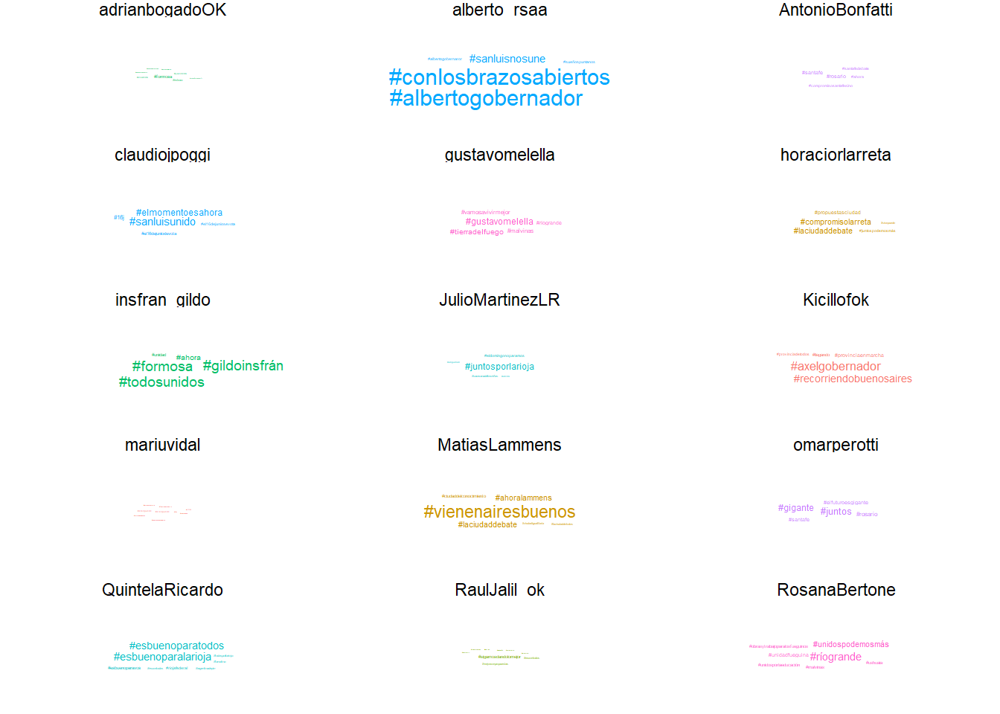

¿Cuánto y qué dicen los candidatos?
Elocuencia de los candidatos
Atendamos a la primera parte de nuestro interrogante. Algo interesante de ver es cómo evoluciona la emisión de tuits en el tiempo. Para eso, elaboramos el gráfico a continuación.
linea_fecha <- ggplot(joined_candidatos %>%
filter(year(created_at) == 2019 ) %>%
# filtramos el año electoral
arrange(tipo_fecha),
aes(x = date(created_at), fill = tipo_fecha)) +
geom_histogram(position = "identity", bins = 24, alpha = 0.5) +
facet_wrap(~Cargo, ncol = 2) +
# vemos separadamente candidatos a presidente y a gobernador
theme_minimal() +
theme(legend.position = "bottom",
axis.text.x = element_text(angle = 90)) +
scale_x_date(date_breaks = "1 month", date_labels = "%b") +
labs(title = "Evolución de la emisión de tuits en el tiempo",
subtitle = "durante el 2019",
y = "cantidad de tuits emitidos",
x = "fecha",
fill = "")
linea_fechaLos candidatos pueden haber “hablado” mucho o poco… pero claramente lo hacen más durante la campaña1.
Ahora bien, puede objetarse: la cantidad de tuits emitidos es sin dudas una medida básica aún para la sencilla pregunta que nos hemos hecho (¿cuánto han hablado nuestros candidatos?). Ocurre que un simple tuit puede decir mucho, o decir muy poco.
Es hora de transformar nuestra base de datos. Hasta aquí, cada tuit ha constituido una “observación”, es decir, una fila, un dato.
En adelante, buena parte de nuestro trabajo se basará en la descomposición de estos tuits en sus elementos constituyentes: las palabras.
Para operar las transformaciones necesarias, nos valemos de funciones definidas previamente, tal como hemos explicado. Apliquémoslas, entonces.
De manera provisoria, exploraremos diferentes opciones. Tenemos diferentes vías para arribar a los mismos resultados; hemos explorado con bases separadas para candidatos a gobernador y a presidente, y hemos aplicado a cada base diferentes tipos de “tokenización”. A continuación presentamos únicamente el código que da origen a las bases que utilizaremos después.
# TRANSFORMACIONES DE LOS DATOS
# Tokenizando ######
# tokenizando por palabra
joined_presid_tokenizadas <- joined_presid %>% tokenizarTextoTuits()
joined_gobernadores_tokenizadas <- joined_gobernadores %>% tokenizarTextoTuits()
# tokenizado especial para tuits
joined_gobernadores_tokentweets <- joined_gobernadores %>% tokenizarTextoTuits(tipo_token = "tweets")
# agregando bases ####
joined_candidatos <- joined_candidatos %>%
left_join(datos_base)
candidatos_tokenizadas <- rbind(joined_gobernadores_tokenizadas,
joined_presid_tokenizadas) %>%
left_join(datos_base)¿Cómo se disponen nuestros datos ahora? Veamos un ejemplo
str(candidatos_tokenizadas)## 'data.frame': 128093 obs. of 10 variables:
## $ screen_name: chr "Kicillofok" "Kicillofok" "Kicillofok" "Kicillofok" ...
## $ tweet_id : num 1.19e+18 1.19e+18 1.19e+18 1.19e+18 1.19e+18 ...
## $ created_at : Factor w/ 36279 levels "2016-05-09 13:20:14-03:00",..: 1826 1826 1826 1826 1826 1826 1826 1826 1826 1826 ...
## $ rts : int 1298 1298 1298 1298 1298 1298 1298 1298 1298 1298 ...
## $ fav_count : int 4549 4549 4549 4549 4549 4549 4549 4549 4549 4549 ...
## $ tokens : chr "este" "es" "un" "proyecto" ...
## $ Candidato : chr "Axel Kicillof" "Axel Kicillof" "Axel Kicillof" "Axel Kicillof" ...
## $ Distrito : chr "Buenos Aires" "Buenos Aires" "Buenos Aires" "Buenos Aires" ...
## $ tipo_fecha : chr "Simultanea" "Simultanea" "Simultanea" "Simultanea" ...
## $ Cargo : chr "Gobernador" "Gobernador" "Gobernador" "Gobernador" ...Nótese que la columna “tokens” contiene solamente términos individuales. Y que nuestro data frame contiene “apenas”… 128.093 observaciones.
Ya podemos seguir explorando :mag: . Para continuar con la pregunta que nos convocaba, “¿cuánto hablan nuestros candidatos?”, podemos diagramar la relación entre las palabras y los tuits emitidos. Graficamos separadamente los candidatos a presidente y a gobernador.
# preparamos los datos a graficar
# obtenemos las medidas deseadas: cantidad de palabras emitidas por nuestros candidatos
candidatos_sintesis1 <- candidatos_tokenizadas %>%
group_by(screen_name, tweet_id) %>%
dplyr::mutate(cantidad_palabras_tuit = dplyr::n()) %>%
ungroup() %>%
group_by(screen_name) %>%
dplyr::summarise(palabras_promedio_tuit = mean(cantidad_palabras_tuit),
palabras_totales_emitidas = dplyr::n())
# .. y calculamos los tuits emitidos
candidatos_sintesis2 <-joined_candidatos %>%
subset(Campaña ==1) %>%
group_by(screen_name) %>%
dplyr::summarise(cantidad_tuits_emitidos = n())
candidatos_sintesis <- left_join(candidatos_sintesis1, candidatos_sintesis2) %>%
left_join(datos_base)
# graficamos:
plot_promediopalabras_cantidadtuits <- ggplot(candidatos_sintesis,
aes(cantidad_tuits_emitidos,
palabras_promedio_tuit,
colour=screen_name,
size= palabras_totales_emitidas)) +
geom_point(alpha = 0.8) +
geom_text(aes(label= screen_name),
hjust = 0, vjust = 1, size = 3, colour="black")
# un poquito de formato para nuestro gráfico
plot_promediopalabras_cantidadtuits <- plot_promediopalabras_cantidadtuits %>%
formatPlot(plottitle = "Elocuencia de los candiatos",
plotsubtitle = "durante la campaña de 2019",
xlabel = "Tuits emitidos",
ylabel = "Palabras promedio por tuit",
plotcaption = "Fuente: elaboración propia")
# resultado:
plot_promediopalabras_cantidadtuitsVemos que hay candidatos que dijeron mucho en cada tuit, como Raúl Jalil, pero emitieron pocos tuits; otros, como A. R. Saa, emitieron muchos tuits pero fueron breves en cada uno de ellos (en promedio); finalmente, hay candidatos que hablaron muy poco, como A. Bogado, o mucho, como M. Macri, conforme a ambas medidas.
De la cantidad a la calidad
La cantidad de palabras o tutis dichos por un candidato, su “elocuencia”, sigue siendo poco informativa acerca de qué tan atractivo o no es su discurso en la red social.
Exploremos qué palabras, y no ya cuántas, prefirieron nuestros twitteros durante la campaña.
¿Palabras en la nube o una nube de palabras?
Podemos comenzar por una sencilla nube de palabras. Nos valemos del paquete wordcloud(), que nos permite hacer “nubes comparativas”.
# Nubes de palabras #####
# comparando por distrito
matriz_cargos <- candidatos_tokenizadas %>%
limpiarTokens(palabras_web = TRUE, hashtags = TRUE, mentions = TRUE) %>%
group_by(Cargo, tokens) %>%
dplyr::mutate(n = dplyr::n()) %>%
acast(tokens ~ Cargo, value.var = "n", fill = 0)
wordcloud::comparison.cloud(matriz_cargos,
colors = c("lightblue", "blue"),
max.words = 100,
title.size=NULL)
Como podríamos haber imaginado, los candidatos a gobernador utilizan más términos relativos al “territorio”: “vecinos”, “provincia”, “barrios”, “ciudad”, “villa”. Pero también a las “familias”, la “casa”, el “club”. En cambio, los candidatos a la presidencia apelan a la “nación”, a la “Argentina”, y, en principio, a temas de macroeconomía como los “impuestos” y la “deuda”.
Términos distinguidos, o distinguidos por los términos
Una medida comparativa interesante es el cálculo de term frequency - inverse document frequency (o sencillamente tf-idf), que estima qué tan “particulares” son los términos utilizados por un hablante2.
En este script exploramos varias combinaciones de cálculos interesantes, pero elejimos a nuestros fines en este post mostramos las palabras que mejor caracterizan a cada candidato a Gobernador, y los “términos de twitter” más propios de cada candidato a la presidencia.
Nótese que debimos limpiar las bases “tokenizadas”. De no hacerlo, las palabras más propias de cada candidato eran los hashtagas de la propia campaña. Veremos cuáles son estos enseguida.
Nótese también que aquí estamos tratando al conjunto de tuits emitidos por los candidatos como un único “documento”. Para otro tipo de cálculos, resulta más pertinente tomar a cada tuit único en calidad de documento independiente.
# a gobernador
# tf_idf / gobernadores / tokens = tweets
joined_gobernadores_tokentweets_tfidf <- joined_gobernadores_tokentweets %>%
limpiarTokens(palabras_web = TRUE, mentions = TRUE, hashtags = TRUE, , largo =TRUE) %>%
# limpiamos la base
dplyr::count(screen_name, tokens, sort = TRUE) %>%
# cálculo de tf_idf
bind_tf_idf(tokens, screen_name, n)
sliced_gobs_tfidf_tokentweet <- joined_gobernadores_tokentweets_tfidf %>%
# nos quedamos con los términos más relevantes a los fines de hacer un gráfico legible
subset( !(str_detect(tokens, "enlacetuit" ))) %>%
group_by(screen_name) %>%
slice_max(tf_idf, n = 12) %>%
ungroup() %>%
mutate(tokens = reorder(tokens, tf_idf)) %>%
left_join(datos_base) %>%
group_by(screen_name) %>%
slice_head(n=12) %>%
ungroup()
plot_gobs_tfidf_tokentweet <- ggplot(sliced_gobs_tfidf_tokentweet ,
aes(tokens, tf_idf, fill = Distrito)) +
geom_col(show.legend = FALSE) +
labs(x = NULL, y = "tf-idf") +
# mostramos a cada candidato independientemente
facet_wrap(~screen_name, ncol = 5, scales = "free") +
# un poco de formato
theme_clean() +
coord_flip() +
scale_x_reordered() +
theme(strip.text = element_text(size = 7),
axis.text.y = element_text(size = 7, hjust = 0.8),
axis.text.x = element_blank()) +
labs(title = "Términos más 'propios' de cada candidato",
subtitle = "a Gobernador")
# a presidente. Repetimos pasos
# tf_idf / presidente / tokens = words
joined_presid_tokenizadas_tfidf <- joined_presid_tokenizadas %>%
# limpiamos base
limpiarTokens(palabras_web = TRUE, mentions = TRUE, hashtags = TRUE, largo =TRUE) %>%
dplyr::count(screen_name, tokens, sort = TRUE) %>%
# calculamos tf_idf
bind_tf_idf(tokens, screen_name, n)
# nos quedamos con los términos más relevantes
sliced_presid_tfidf <- joined_presid_tokenizadas_tfidf %>%
group_by(screen_name) %>%
slice_max(tf_idf, n = 14) %>%
ungroup() %>%
mutate(tokens = reorder(tokens, tf_idf)) #ordenamos
plot_presid_tfidf <- ggplot(sliced_presid_tfidf,
aes(tokens, tf_idf, fill = screen_name)) +
geom_col(show.legend = FALSE) +
labs(x = NULL, y = "tf-idf") +
facet_wrap(~screen_name, ncol = 3, scales = "free") +
# un poco de formato
theme_clean() +
coord_flip() +
scale_x_reordered() +
theme(strip.text = element_text(size=9),
axis.text.y = element_text(size = 7, hjust = 0.8),
axis.text.x = element_blank()) +
labs(title = "Términos más 'propios' de cada candidato",
subtitle = "a Presidente")Veamos los resultados para los candidatos a Gobernador
plot_gobs_tfidf_tokentweet
Quizás era esperable: el discurso de los candidatos se distingüe conforme a su distrito de pertenencia. M. Lammens se dirije a los “porteños”, G. Insfrán a “Formosa” y los “formoseños”, A. Bonfatti a los “santafesinos”, a la ciudad de Rosario… etc.
Algunas cosas más interesantes surjen de ver qué caracteriza a los candidatos a la presidencia.
plot_presid_tfidf
Los términos parecen ser indicativos de un estilo discursivo global.
En algunos casos parecen ilustrar la construcción del “ethos” de los candidatos. Por ejemplo, J.L. Espert difunde muy activamente su costado “mediático”. R. Lavagna, en cambio, parece haberse posicionado por referencia a su gestión como ministro de economía a la salida de la crisis de 2001.
En otros destaca el componente temporal: A. Fernández refiere claramente al futuro, M. Macri parece concentrarse en la política en sus detalles (y probablemente a lo hecho durante su gestión) - desde luego, esperable dado que era el Presidente en ejercicio -.
Por su parte, destaca la carga “páthica” de J.J. Gomez Centurión, que hace alusiones al “terror” y al “terrorismo”. Y, finalmente, N. del Caño se diferencia por su interlocutor: los “trabajadores”, los sectores “populares”.
¿Y los hashtags?
Como habrá visto nuestro lector, en los gráficos anteriores seteamos la opción hashtag = TRUE en limpiarTokens(): esto se deshace de los tokens (términos) que sean, valga la obviedad, hashtags: “#”. Hicimos esto porque esta suerte de etiquetas virtuales son a la vez muy utilizadas y muy propias de cada candidato, ofician de “lemas de campaña” repetidos hasta el cansancio. En consecuencia ¡copaban todo el gráfico!
A los fines de satisfacer a todo tipo de curiosos, y antes de pasar en la próxima sección a atender al otro gran tipo de término que hicimos a un lado de momento: las menciones, veamos cuáles fueron los hashtags más utilizados por nuestros candidatos.
Para ello, graficamos unas “nubes de hashtags” a continuación:
# Hashtags #####
# identificamos nuestros datos
candidatos_hashtags <- candidatos_tokenizadas %>%
subset(str_detect(tokens, "(hashtag)")) %>%
mutate(hashtags = str_replace(tokens, "(hashtag)", "#")) %>%
select(-c(tokens)) %>%
dplyr::count(screen_name, hashtags) %>%
left_join(datos_base) %>%
group_by(screen_name) %>%
slice_max(n, n = 5)
# plot por separado para claridad visual
# usamos la nube de palabras de ggplot
# de gobernadores
plot_gobernador_hashtags <- ggplot(candidatos_hashtags %>%
filter(Cargo=="Gobernador"),
aes(label = hashtags,
size = n,
colour = Distrito)) +
geom_text_wordcloud() +
facet_wrap(~screen_name, ncol = 3) +
scale_size_area(max_size = 4) +
theme_clean()
# de presid
plot_presid_hashtags <- ggplot(candidatos_hashtags %>%
filter(Cargo=="Presidente"),
aes(label = hashtags,
size = n,
colour = screen_name)) +
geom_text_wordcloud() +
facet_wrap(~screen_name, ncol = 3) +
scale_size_area(max_size = 5) +
theme_clean()Vemos que los candidatos no sólo utilizan distintos hashtags, sino que lo hacen con diferente intensidad, como indica el mayor o menor tamaño de los términos en la grilla.
plot_gobernador_hashtags
Algo interesante es que varios candidatos a la presidencia tuvieron entre sus # más utilizados al del debate presidencial.
plot_presid_hashtags
Hemos indagado visualmente en algunos de los términos más o menos utilizados por los candidatos.
Pero nos ha quedado pendiente uno de los “tipos” de palabras más importantes en Twitter: las menciones, esto es, cuando un twittero utiliza el “@” para dirigirse o citar directamente a alguien. Estos nombres propios pueden decirnos algo acerca de las relaciones interpersonales entre nuestros candidatos. Por ello les hemos dedicado un post completo, que sugerimos leer a continuación.
:fast_forward: Seguir leyendo
Volver al inicio :house:
{kind=link}
{kind=link}